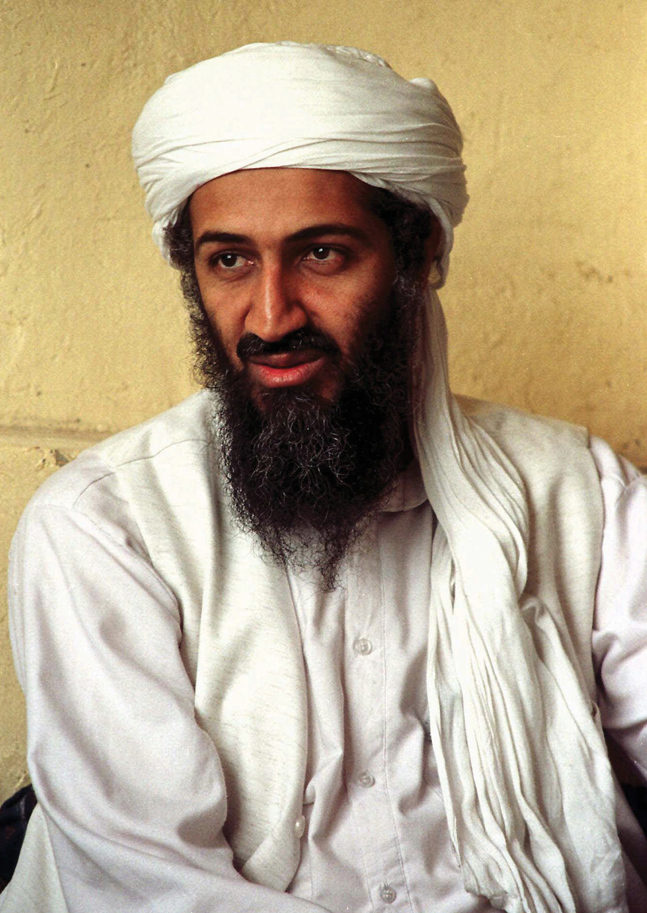
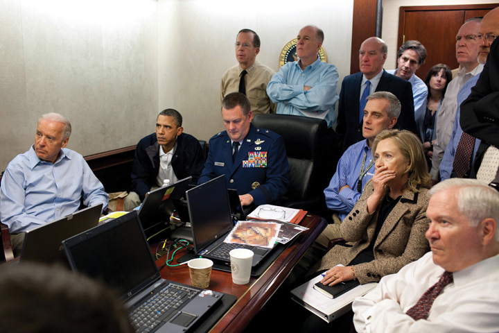

After reading this section, you should be able to answer the following questions:
After the 9/11 terrorist attacks, President George W. Bush focused on a policy of global leadership in a war on terrorism.For criticism of the Bush policy, see John E. Mueller, Overblown: How Politicians and the Terrorism Industry Inflate National Security Threats, and Why We Believe Them (New York: Free Press, 2006); and Louise Richardson, What Terrorists Want: Understanding the Enemy, Containing the Threat (New York: Random House, 2005). Media coverage and depictions would exaggerate terrorism and add to the importance of the war.Brigitte L. Nacos, Mass-Mediated Terrorism: The Central Role of the Media in Terrorism and Counterterror (Lanham, MD: Rowman & Littlefield, 2007).
The first confrontation in this war came in Afghanistan, where Osama bin Laden, the acknowledged mastermind of the 9/11 attacks had taken refuge and where his terrorist organization, Al Qaeda, enjoyed support and protection from the ruling Taliban government.Bob Woodward, Bush at War (New York: Simon & Schuster, 2002).
Figure 17.2 Osama bin Laden
The Saudi Arabian leader of Al Qaeda and mastermind of the 9/11 attacks symbolized terrorism for US policymakers and the media.
Source: Used with permission from AP Photo.
President Bush demanded that the Taliban expel Osama bin Laden and Al Qaeda and sever its ties with international terrorism. When this did not happen, the United States and its allies began aerial strikes against terrorist facilities and Taliban military targets inside Afghanistan on October 7, 2001. Ground forces were supplied largely by the Northern Alliance, a coalition group that had opposed Taliban rule. Its efforts were aided and guided by the Central Intelligence Agency (CIA) and US military forces. The Taliban soon surrendered, but its leader and Osama bin Laden remained at large.
Figure 17.3 The Death of Osama bin Laden
Osama bin Laden would be killed on May 1, 2011, by US Navy Seals in his hideaway in Pakistan. In this photograph, released by the White House and shown around the world, we see the president, Vice President Joe Biden, Secretary of State Hillary Clinton, Secretary of Defense Robert Gates, and other members of the president’s national security team in the Situation Room as cameras mounted on the helmets of the attackers send video footage of the assault narrated from CIA headquarters by Director Leon Panetta.
Source: Photo courtesy of the White House (Pete Souza)http://www.flickr.com/photos/whitehouse/5680724572/.
In covering the war in Afghanistan, the US media reported a consensus among policymakers and the public on the need to defeat the Taliban; the media also focused on military strategy and its execution and paid little attention to the loss of life and destruction caused by the war. As CNN chairman Walter Isaacson wrote in a memo instructing its correspondents not to focus excessively on Afghan suffering, “We must redouble our efforts to make sure we do not seem to be simply reporting from their vantage or perspective.”Alessandra Stanley, “Battling the Scepticism of a Global Audience,” New York Times, November 1, 2001, B4.
Nation-building turned out to be far more difficult than overthrowing the Taliban. Some roads and buildings were rebuilt, and some girls, excluded from education by the Taliban, returned to school. Presidential elections, held in 2004 and 2009, were won by the more or less pro-US Hamid Karzai. There was little “security, stability, prosperity, or the rule of law.”The quote and information in this paragraph come from J. Alexander Thier, “A Chance of Success Slips Away,” New York Times, September 23, 2004, A27. Outside the capital of Kabul, Afghanistan was a collection of fiefdoms run by warlords and an opium-growing economy that fueled lawlessness and funded terrorists. The country’s Supreme Court was controlled by Islamic fundamentalists. Except for the election, Afghanistan was mostly forgotten and ignored by the US news media, whose attention largely turned to Iraq.
President George W. Bush outlined a new direction for American foreign and military policy. Known as the Bush Doctrine, it contained three interrelated themes.John Lewis Gaddis, “A Grand Strategy of Transformation,” Foreign Policy 130 (2002): 50–57.
First, predominance is the necessary foundation of American military strategy. The United States must possess a significant military power advantage over all other states so that it can act unilaterally (alone) to defend its national interests when and where it sees fit.
Second, the strategy for employing military power is preemptionPresident George W. Bush’s policy, exemplified in the war against Iraq, of removing threats before they harm the United States.. Rather than containment and deterrence, the United States will act first to remove threats before they are capable of harming it.
Third, in addition to reducing the military threat posed by other states, preemption has a goal of fostering regime change. Regime change is necessary because hostile states and terrorist organizations, the two principal threats to the United States through their possession of or attempts to possess weapons of mass destruction, are unlikely to change their ways. Only by removing them from power can the threat be eliminated.
Critics pointed out the limitations of preemption as a policy. In theory it should be applied to Iran and North Korea, which are hostile to the United States. But Iran could attack Israel and strike back against US forces in the region; and North Korea could unleash its nuclear weapons and invade South Korea. So under what circumstances and when should the policy be applied?
Given its heavy involvement of military and money in Iraq, moreover, did the United States have the resources to apply a preemption policy to any other countries? The National Guard and Reserve made up approximately 40 percent of US forces in Iraq and Afghanistan. The system is not designed to keep reservists on duty in a campaign against terrorism and fighting abroad for an extended period. Reservists train one weekend a month and two weeks a year, accelerated before deployment; thus many of them are ill prepared and lack combat skills.Ivo H. Daalder, James M. Lindsay, and James B. Steinberg, “The Bush National Security Strategy: An Evaluation,” Policy Brief #109 (Washington, DC: Brookings Institution Press, 2002).
The Bush Doctrine provided the strategic rationale for the Iraq War.Glenn P. Hastedt, Understanding the War in Iraq (Upper Saddle River, NJ: Prentice Hall, 2004); Bob Woodward, Plan of Attack (New York: Simon & Schuster, 2004). The diplomatic maneuvering leading up to war entered into the final phase on March 17, 2003, when President Bush addressed the nation and gave Saddam Hussein forty-eight hours to leave Iraq. Hussein rejected Bush’s ultimatum.
The first blow in the war was struck in the early morning hours of March 20, when President Bush ordered an air strike against the Iraqi leadership. The ground war began early in the evening of the same day, as American and British forces crossed into Iraq from Kuwait. Baghdad fell on April 9. On May 1, aboard the USS Abraham Lincoln, President Bush declared an end to major hostilities. In Iraq, celebrations of peace were short-lived as looting and anarchy soon became the order of the day, followed by insurgency and sectarian conflict. The United States soon went from liberator to occupier.
To build support for the war, the administration had claimed that Iraqi dictator Saddam Hussein was a major threat to the United States because he possessed biological, chemical, and perhaps nuclear weapons of mass destruction and was likely to supply them to terrorists. To make its case, the administration treated unclear or ambiguous information as certain facts (e.g., that Iraq had attempted to obtain uranium from Africa). It ignored intelligence questioning whether Iraq possessed weapons of mass destruction and implied links between Saddam Hussein, 9/11, and terrorists that were never proven. The administration also used inflammatory language (e.g., “We don’t want the smoking gun to be a mushroom cloud” said National Security Advisor Condoleezza Rice).
Before the war, the media transmitted, parroted, promulgated, generally confirmed, and rarely challenged the administration’s scare campaign.Michael Massing, “Now They Tell Us,” New York Review, February 26, 2004, 43–49; also his exchanges with journalists from the New York Times, March 25, 2004, 45–46, and the Washington Post, April 8, 2004, 74–77; and Massing’s “Unfit to Print?,” New York Review, May 27, 2004, 6–10. For a strong dissent, arguing that media coverage of his speeches was biased against President Bush, see Jim A. Kuypers, Bush’s War: Media Bias and Justifications for War in a Terrorism Age (Lanham, MD: Rowman & Littlefield, 2006). The television networks’ coverage of domestic dissent was minimal, although they did report opposition from countries such as France arguing for a diplomatic solution.Danny Hayes and Matt Guardino, “Whose Views Made the News? Coverage and the March to War in Iraq,” Political Communication 27 (2010): 59–87.
The New York Times in particular supported the administration’s rationale for going to war with Iraq by accepting US government sources and Iraqi exiles’ claims at face value, displaying them on the front page under heavy-breathing headlines. The Times gave glowing coverage to Secretary of State Colin Powell’s speech and presentation of February 5, 2003, to the United Nations supposedly documenting Iraq’s weapons of mass destruction.
The Times undermined the credibility of Iraqi government denials by following them with challenges from US officials, and it discredited US and foreign sources critical of the administration’s argument. Stories challenging the administration’s case for war were downplayed: James Risen’s “C.I.A. Aides Feel Pressure in Preparing Iraqi Reports,” completed several days prior to the invasion, was not printed until three days after the start of the war and was then relegated to page B10.Daniel Okrent, “Weapons of Mass Destruction? Or Mass Distraction?,” New York Times, May 30, 2004, sec. 4, p. 2. Dissenters received little coverage.
Because the Times has a reputation for occasional skepticism about people in authority, its coverage gave credibility to the administration’s arguments. Moreover, many news organization, such as CNN and National Public Radio, follow the Times’ lead.
The lack of vigorous challenges by leaders of the Democratic Party to the Bush administration in the run-up to the war left little criticism of the Bush policy for the news media to transmit. But the Times’ coverage contributed to the Democrats’ docility. If the Times had published more critical stories, some Democrats could have been emboldened to attack the war policy.
The Iraq War
Media coverage of the war itself was dramatically different depending on whether one was exposed to US or Arab media.This is based on Rami G. Khouri, “For the Full Story, Watch US & Arab TV,” Pacific News Service, March 26, 2003; James Poniewozik, “What You See vs. What They See,” Time, April 7, 2003, 68–69; and Jacqueline E. Sharkey, “The Television War,” American Journalism Review 25 (May 2003): 18.
In general, the US media supported the war, presenting it as “America against the enemy,” or as “us versus them.” Complexities were ignored: there were no in-depth stories on the history of Iraq, its factions (Kurds, Shiite, and Sunni Muslims); no understanding that, despite their hatred of Saddam Hussein, many Iraqis would not welcome the United States.
Television was most enthusiastic. Morning shows depicted the attack on Iraq as right and proper. Cable stations were unabashedly patriotic: Fox News titled its coverage “Op. Iraqi Freedom: War on Terror.” American flags were part of on-screen logos and backdrops. Many of the expert commentators were former high-ranking officers in the US military who were enthusiastically or at least guardedly prowar.
American reporters embedded with the invasion forces gave the troops’ perspective to their American audience. Reporters framed the conflict the same way as US officials and military commanders.
The war shown on American television networks and on cable was almost entirely bloodless. It featured the “video game” aspects of the technical wizardry of American military power.Sean Aday, “The Real World Will Never Get on Television: An Analysis of Casualty Imagery in American Television Coverage of the Iraq War,” in Media and Conflict in the 21st Century, ed Philip Seib (New York: Palgrave Macmillan, 2005), 141–56. There was a dearth of gruesome or grisly footage. Reports repeated the Pentagon’s sanitized language: “degraded” for slaughtered Iraqi units, “softening up” for the exploding of Iraqi soldiers in their bunkers.
In dramatic contrast was the depiction of the war by Al Jazeera, the Qatar-based satellite television channel, dominated by Arab nationalists and Islamists, transmitting to a daily audience of thirty-five million across the Arab world. (The channel is barely seen in the United States.) It showed a different version of the war with different subjects and frames.
Al Jazeera had access to the Iraqi leadership. It placed correspondents and cameras in the Iraqi cities under attack and reported from the inhabitants’ perspectives. Its staff gave an Arab point of view to an Arab audience.
Al Jazeera did not ignore the American side. It reported the allied advances, had a reporter embedded with US forces, and broadcast sound bites from President Bush. But it debated rather than interviewed American spokespersons. It featured critics of the United States, took Iraqi government statements at face value, and highlighted any setbacks of the coalition forces.
Al Jazeera barely mentioned that the United States was opposing a brutal dictatorship. It depicted the US military as an invading, occupying force of ruthless killers. It broadcast a report from Iraqi television of pictures of dead US soldiers and interviews with captured ones. It showed raw and graphic footage of the destruction inflicted on Iraq and the pain and suffering of its civilians: charred bodies, mourning families, hospitals choked with bleeding and burned civilians.
President Bush announced victory, but Iraq remained a country with ethnic and tribal divisions and religious fanatics following the dictates of clerics. Conflict continued, with insurgents attacking and killing US troops, Iraqi police, and public officials. Weapons of mass destruction were not found. The condition of the country’s infrastructure was dire. Many more billions of dollars were needed to pay for the war and reconstruction and to keep US troops in Iraq.
Elite consensus over the war evaporated. The revitalized Democratic opposition was reflected in Vermont Governor Howard Dean’s campaign for the party’s 2004 presidential nomination. He called the war precipitous and poorly prepared. The 9/11 Commission found that Iraq had no collaborative relationship with Al Qaeda and no involvement in the attacks on the World Trade Center. The former head of counterterrorism at the National Security Council contended that before the attacks, the Bush White House did not treat the danger of Osama bin Laden and Al Qaeda as urgent. He confirmed that the possibility of attacking Iraq was on the administration’s policy agenda before 9/11.Richard A. Clarke, Against All Enemies: Inside America’s War on Terror (New York: Free Press, 2004); for a more sympathetic view of President Bush, see Bob Woodward, Bush at War (New York: Simon & Schuster, 2002).
Media coverage of Iraq turned critical. There were frequent reports of bombings, suicide attacks, and stories of people kidnapped and beheaded. There was a media feeding frenzy of revelations about and photographs of torture by US personnel and private contractors in the Abu Ghraib prison in Iraq and in Afghanistan.Seymour M. Hersh, Chain of Command: The Road from 9/11 to Abu Ghraib (New York: HarperCollins, 2004).
Figure 17.4 Abu Ghraib Prisoner “Gilligan” Hooded, Caped, and Wired on His Box

Photographs such as this, shown around the world, undermined the US claim to be a liberator not an occupier of Iraq.
The Bush Doctrine was three-pronged: it featured predominance, preemption, and regime change as the pillars of US foreign policy. The US therefore conducted military operations in Afghanistan in response to the 9/11 attacks. President George W. Bush’s doctrine of preemption then involved the United States in a war to overthrow the ruling regime in Iraq. While the media initially gave favorable coverage to the decision to go to war and to the military operations in Iraq, subsequent revelations about errors made both before and during the war brought about media criticism of the administration’s decision to go to war and its conduct of the war.